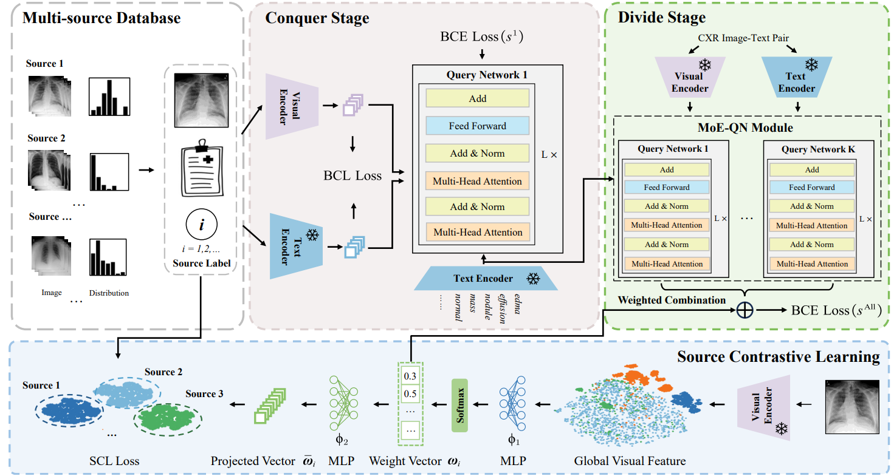
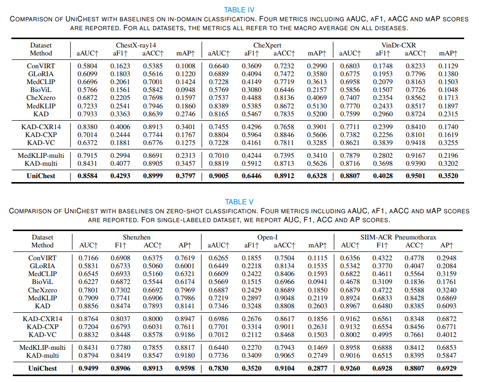

UniChest: Conquer-and-Divide Pre-training for Multi-Source Chest X-Ray Classification
|
1Cooperative Medianet Innovation Center, Shanghai Jiao Tong
University
|
|
2Shanghai Artificial Intelligence Laboratory
|
|
IEEE Transactions on Medical Imaging, Issue 8, Volume 43
|
Abstract
Vision-Language Pre-training (VLP) that utilizes the multi-modal information to promote the training efficiency and effectiveness, has achieved great success in vision recognition of natural domains and shown promise in medical imaging diagnosis for the Chest X-Rays (CXRs).
However, current works mainly pay attention to the exploration on single dataset of CXRs, which locks the potential of this powerful paradigm on larger hybrid of multi-source CXRs datasets. We identify that although blending samples from the diverse sources offers the advantages to improve the model generalization, it is still challenging to maintain the consistent superiority for the task of each source due to the existing heterogeneity among sources.
To handle this dilemma, we design a Conquer-and-Divide pre-training framework, termed as UniChest, aiming to make full use of the collaboration benefit of multiple sources of CXRs while reducing the negative influence of the source heterogeneity. Specially, the ``Conquer" stage in UniChest encourages the model to sufficiently capture multi-source common patterns, and the ``Divide" stage helps squeeze personalized patterns into different small experts (query networks). We conduct thorough experiments on many benchmarks, e.g., ChestX-ray14, CheXpert, Vindr-CXR, Shenzhen, Open-I and SIIM-ACR Pneumothorax, verifying the effectiveness of UniChest over a range of baselines, and release our codes and pre-training models at https://github.com/Elfenreigen/UniChest.
Architecture

The framework of UniChest, which consists of two training stages. During the ``Conquer" stage, two modality encoders first project visual and textual representations into the common space with alignment, then feed them into the first transformer query networks for prediction. The multi-source common patterns are learnt as much as possible at this stage. During the ``Divide" stage, we freeze the modality encoders and squeeze the source-specific patterns via the MoE-QN module with the guidance of the enhanced supervised loss and the source contrastive learning.
Results
